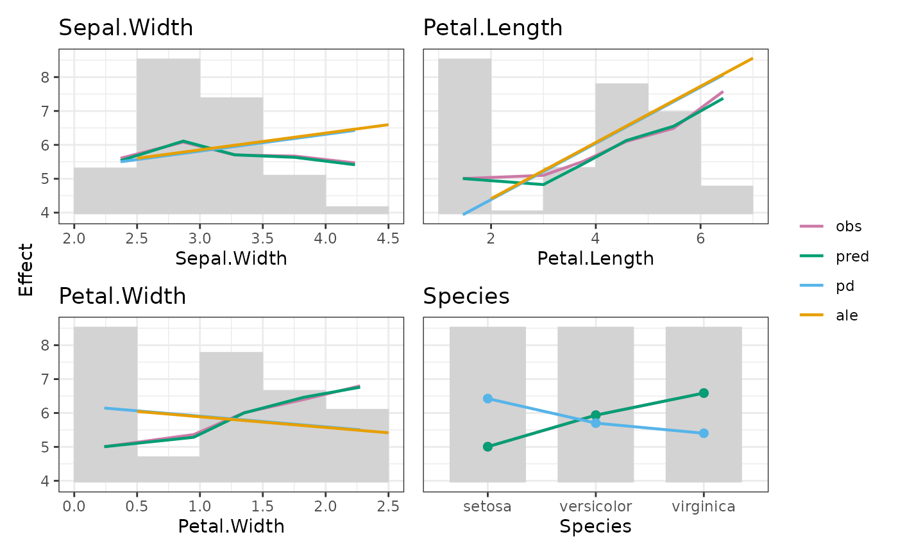
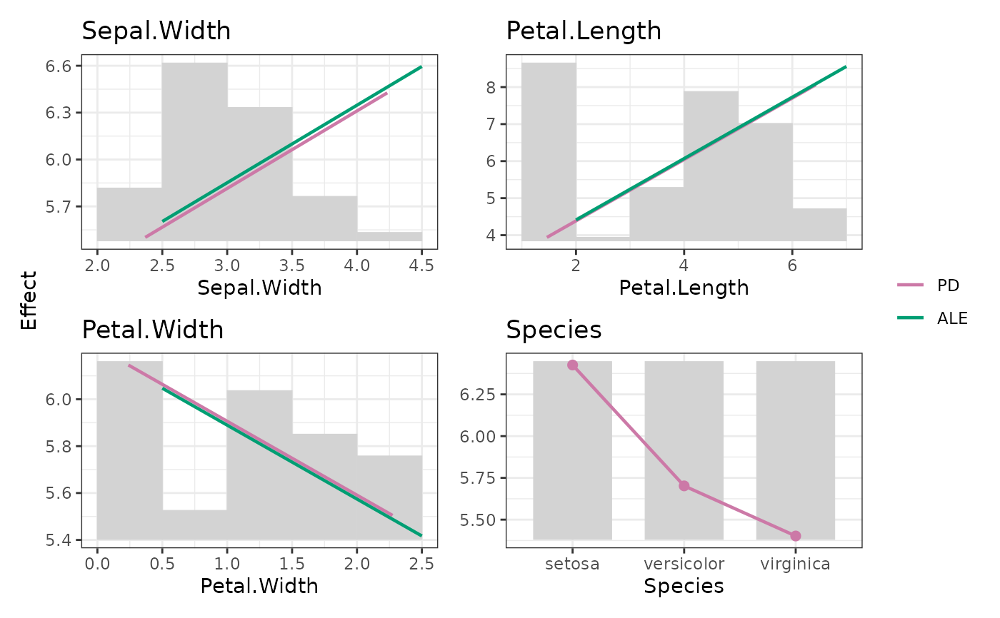

Versatile plot function for an "EffectData" object. By default, all calculated
statistics (except "resid_mean") are shown. To select certain statistics,
use the stats argument. Set plotly = TRUE for interactive plots.
# S3 method for class 'EffectData'
plot(
x,
stats = NULL,
ncol = grDevices::n2mfrow(length(x))[2L],
byrow = TRUE,
share_y = c("no", "all", "rows", "cols"),
ylim = NULL,
cat_lines = TRUE,
num_points = FALSE,
title = "",
subplot_titles = TRUE,
ylab = NULL,
legend_labels = NULL,
interval = c("no", "ci", "ciw", "sd"),
ci_level = 0.95,
colors = getOption("effectplots.colors"),
fill = getOption("effectplots.fill"),
alpha = 1,
bar_height = 1,
bar_width = 0.7,
bar_measure = c("weight", "N"),
wrap_x = 10,
rotate_x = 0,
plotly = getOption("effectplots.plotly"),
...
)Arguments
- x
An object of class "EffectData".
- stats
Vector of statistics to show. The default
NULLequals eitherc("y_mean", "pred_mean", "pd", "ale"), or"resid_mean"(whenxresults frombias()). Only available statistics are shown. Additionally, this argument controls the order used to plot the lines.- ncol
Number of columns of the plot layout, by default
grDevices::n2mfrow(length(x))[2L]. Only relevant for multiple plots.- byrow
Should plots be placed by row? Default is
TRUE. Only for multiple plots.Should y axis be shared across subplots? The default is "no". Other choices are "all", "rows", and "cols". Note that this currently does not take into account error bars/ribbons. Has mo effect if
ylimis passed. Only for multiple plots.- ylim
A vector of length 2 with manual y axis limits, or a list thereof.
- cat_lines
Show lines for non-numeric features. Default is
TRUE.- num_points
Show points for numeric features. Default is
FALSE.- title
Overall plot title, by default
""(no title).- subplot_titles
Should variable names be shown as subplot titles? Default is
TRUE. Only for multiple plots.- ylab
Label of the y axis. The default
NULLautomatically derives a reasonable name.- legend_labels
Vector of legend labels in the same order as the statistics plotted, or
NULL(default).- interval
What intervals should be shown for observed y and residuals? One of
"no" (default),
"ci": Z confidence intervals using sqrt(N) as standard error of the mean,
"ciw": Like "ci", but using sqrt(weight) as standard error of the mean, or
"sd": standard deviations. Ribbons for numeric X, error bars for categorical X.
- ci_level
The nominal level of the Z confidence intervals (only when
errorequals "ci" or "ciw"). The default is 0.95.- colors
Vector of line/point colors of sufficient length. By default, a color blind friendly palette from "ggthemes". To change globally, set
options(effectplots.colors = new colors).- fill
Fill color of bars. The default equals "lightgrey". To change globally, set
options(effectplots.fill = new color).- alpha
Alpha transparency of lines and points. Default is 1.
- bar_height
Relative bar height (default 1). Set to 0 for no bars.
- bar_width
Relative bar width of non-numeric features, by default 0.7.
- bar_measure
What should bars represent? Either "weight" (default) or "N".
- wrap_x
Should categorical x axis labels be wrapped after this length? The default is 10. Set to 0 for no wrapping. Vectorized over
x. Only for "ggplot2" backend.- rotate_x
Should categorical xaxis labels be rotated by this angle? The default is 0 (no rotation). Vectorized over
x. Only for "ggplot2" backend.- plotly
Should 'plotly' be used? The default is
FALSE('ggplot2' with 'patchwork'). Useoptions(effectplots.plotly = TRUE)to change globally.- ...
Passed to
patchwork::plot_layout()orplotly::subplot(). Typically not used.
Value
If a single plot, an object of class "ggplot" or "plotly". Otherwise, an object of class "patchwork", or a "plotly" subplot.
See also
Examples
fit <- lm(Sepal.Length ~ ., data = iris)
xvars <- colnames(iris)[-1]
M <- feature_effects(fit, v = xvars, data = iris, y = "Sepal.Length", breaks = 5)
plot(M, share_y = "all")

plot(M, stats = c("pd", "ale"), legend_labels = c("PD", "ALE"))

plot(M, stats = "resid_mean", share_y = "all", interval = "ci")